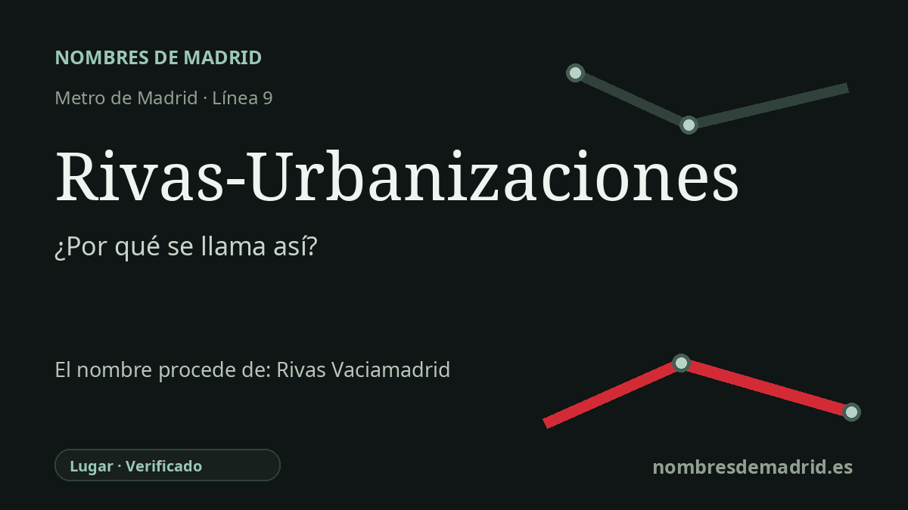

Publicado el · Investigación de Nombres de Madrid · Cómo verificamos cada origen · 7 fuentes consultadas
Respuesta rápida
Rivas-Urbanizaciones toma su nombre de las urbanizaciones residenciales del noroeste de Rivas-Vaciamadrid, especialmente el entorno de Covibar al que da servicio. Se inauguró el 7 de abril de 1999 dentro de la prolongación de la línea 9 entre Puerta de Arganda y Arganda del Rey.
La historia del nombre
Rivas-Urbanizaciones toma su nombre de las urbanizaciones residenciales de Rivas-Vaciamadrid. En el nombre de la estación, Rivas sitúa la parada en el municipio, mientras que Urbanizaciones identifica el área de viviendas y no el casco antiguo. La documentación de la Comunidad de Madrid describe la estación como servicio a un conjunto residencial formado por urbanizaciones, equipamientos y servicios.
La referencia local más concreta es Covibar, el ámbito cooperativo de viviendas junto a la estación. Una memoria urbanística municipal señala que la Comunidad de Madrid había decidido los nombres de las estaciones ripenses de la prolongación: la situada en el casco antiguo se llamaría Rivas-Vaciamadrid y la ubicada en Covibar tendría por nombre Rivas-Urbanizaciones. Por eso el nombre es descriptivo, pero también muy localizado.
La cronología del transporte está bien documentada. La prolongación Puerta de Arganda-Arganda del Rey entró en servicio el 7 de abril de 1999, llevando Metro de Madrid fuera de la capital hacia el corredor del sureste. Rivas-Urbanizaciones fue una de las cuatro estaciones nuevas de esa prolongación, junto con Rivas-Vaciamadrid, La Poveda y Arganda del Rey.
El nombre también refleja un gran cambio urbano. Rivas-Vaciamadrid fue un municipio muy pequeño durante buena parte del siglo XX; los censos del INE registran 653 habitantes en 1981. El crecimiento de desarrollos cooperativos y planificados como Covibar y Pablo Iglesias ayudó a convertirlo en una gran ciudad suburbana, de modo que la palabra Urbanizaciones señala el paisaje residencial al que llegó el metro.
Existe una historia más antigua detrás del nombre municipal Rivas-Vaciamadrid, con los antiguos lugares de Ribas/Rivas del Jarama y Vaciamadrid, unidos en el siglo XIX. Pero esa toponimia es contexto, no la explicación directa de la estación. El nombre de la parada se entiende mejor como una denominación de transporte de finales del siglo XX para las urbanizaciones residenciales de Rivas, no como una conmemoración personal ni como una referencia directa al origen medieval de Vaciamadrid.